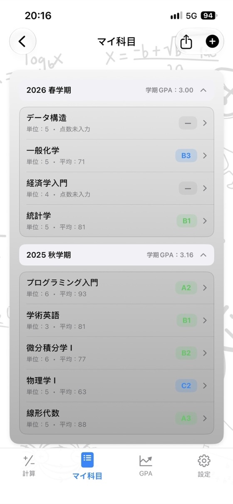
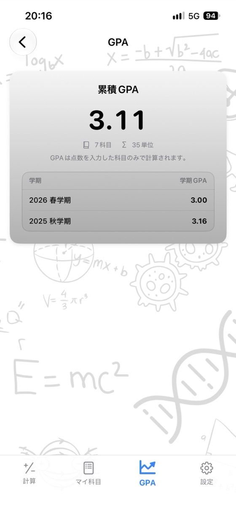
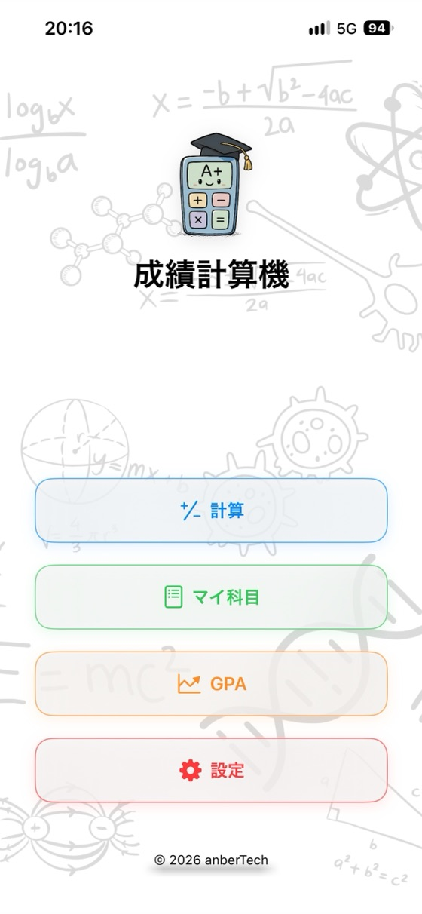
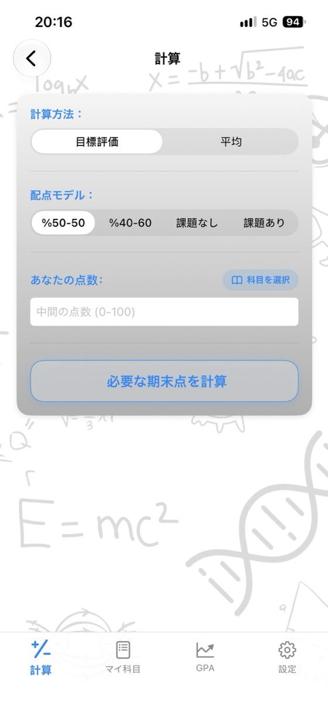
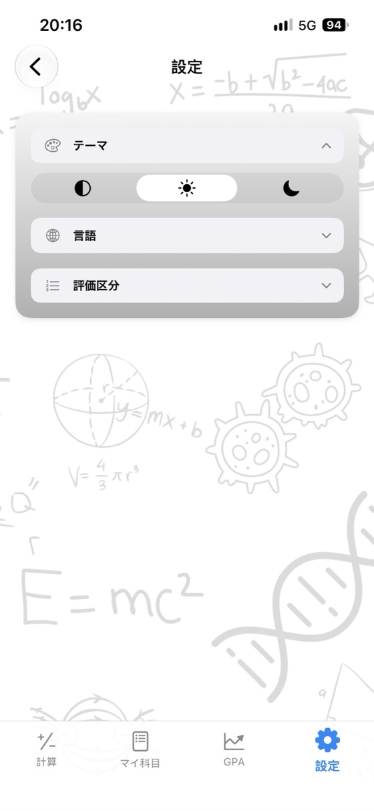

成績を把握して、
将来を計画しよう。
科目の平均、必要な期末点、GPAをひとつのアプリで。広告なし、アカウント登録不要、完全オフライン対応。
- ✓ 無料
- ✓ 広告なし
- ✓ 登録不要
- ✓ オフライン


今すぐ計算
アプリをダウンロードする前にここで試せます。数値を変更すると結果がリアルタイムで更新されます。
期末 (%): 60%
期末 (%): 60%
無料の計算ツール
ダウンロード不要でブラウザからすぐ使えます。登録不要で、入力した成績データが外部に送信されることはありません。
成績計算機が選ばれる理由
科目の平均
中間・期末・課題の点数と配点割合を入力すると、平均点と評価がすぐにわかります。
必要な期末点
各評価（A、B、Cなど）に必要な期末試験の最低点数を1画面で一覧できます。
GPA管理
学期ごとに科目を保存すると、学期GPAと累積GPAが自動で更新されます。
独自の評価基準に対応
通っている大学や学校の基準に合わせて、評価の点数範囲やGP（グレードポイント）を自由に編集できます。
PDFの成績レポート
ワンタップで科目一覧と平均点をPDFとして共有・出力できます。
17言語に対応
日本語、英語、スペイン語、ドイツ語、アラビア語、トルコ語などに対応しています。
プライバシー重視
アカウント登録不要、広告なし、トラッキングなし。データはすべて端末内にのみ保存されます。
オフラインで使える
ネット接続は不要。テスト期間中も、図書館でも、どこでも使えます。
アプリの画面



よくある質問
科目の平均点はどのように計算しますか？
各点数に配点割合（ウェイト）を掛けて合計します。中間40%・期末60%の場合、平均 = 中間 × 0.40 + 期末 × 0.60 です。中間が62点、期末が75点なら 62 × 0.40 + 75 × 0.60 = 69.8 となります。課題がある場合は課題の加重得点も足し、割合の合計が100%になるようにします。
単位を取るには期末試験で何点必要ですか？
必要な期末点 = (目標平均 − 中間 × 中間の割合) ÷ 期末の割合 で求められます。中間が55点（40%）で合格ラインの平均が50点の場合、(50 − 22) ÷ 0.60 = 46.7 となり、期末試験で少なくとも47点が必要です。成績計算機なら、すべての評価に必要な点数を一度に計算できます。
GPAはどのように計算されますか？
各科目のグレードポイント（A = 4.0、B = 3.0 …）にその科目の単位数を掛けて合計し、総単位数で割ります。これにより4.0スケールのGPA（グレード・ポイント・アベレージ）が算出されます。
評価（A・B・Cなど）の基準はどこでも同じですか？
いいえ。点数範囲やグレードポイントは国や大学、さらには授業によって異なります。アプリ内では自分の学校に合わせて評価基準を自由にカスタマイズできます。
期末試験の最低点（足切り点）とは何ですか？
大学や授業によっては、全体の平均点が合格ラインに達していても、期末試験の点数が一定の基準（例：30点、45点、50点など）を下回ると不合格になる制度があります。最低点を入力すると、それも考慮して必要な期末点を計算します。
成績計算機は無料ですか？
はい。App Storeで無料配信しており、広告もサブスクリプションもアプリ内課金も一切ありません。このサイト上の計算ツールもすべて無料で使えます。
入力した成績データはどこに保存されますか？
お使いの端末内にのみ保存されます。アカウント作成は不要で、サーバーへデータが送信されることもありません。Web計算ツールに入力した成績もブラウザ外へ出ることはありません。
Android版はありますか？
Android版はGoogle Playにて近日公開予定です。現在はiPhoneおよびiPad（iOS 17.6以降）向けにApp Storeで配信しています。
すべての履修科目をひとつで管理
無料。広告なし。アカウント登録不要。